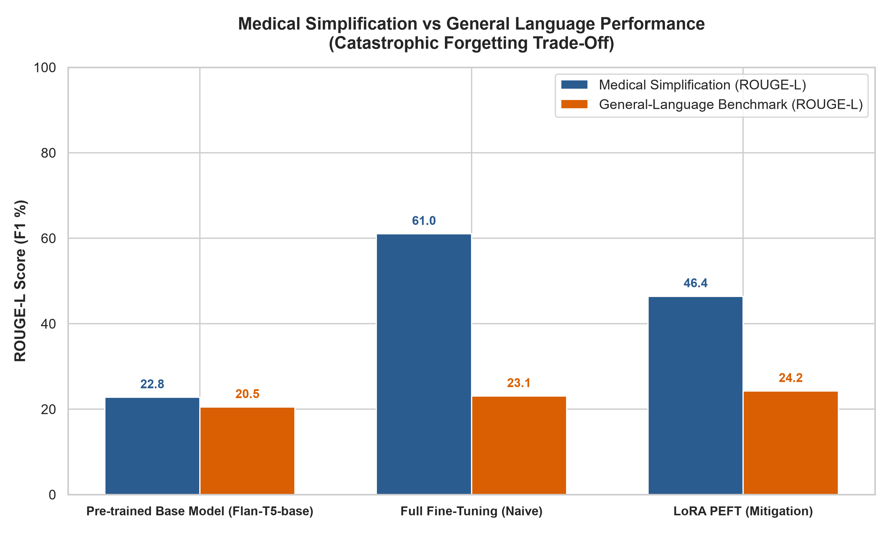
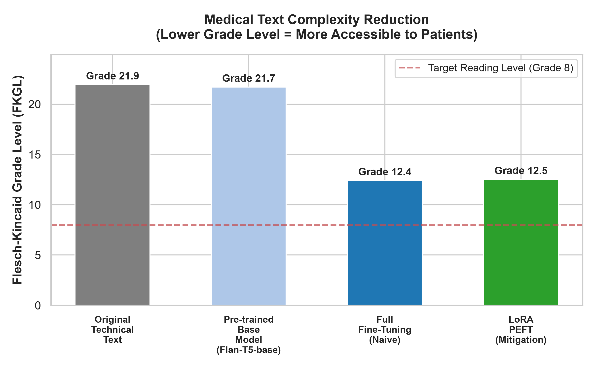

A Controlled Study on Catastrophic Forgetting in Transfer Learning: Comparing Pre-trained Baseline, Naive Full Fine-Tuning, and LoRA PEFT Mitigation.
Choose a clinical case preset below or type a technical medical statement to observe how each model simplifies jargon into 6th–8th grade plain English.
Controlled evaluation conducted on the held-out Medical Test Benchmark (75 pairs) and the strictly isolated General-Language Benchmark (100 pairs).
| Condition | Trainable Parameters | Medical ROUGE-L | Medical Readability (FKGL) | General ROUGE-L | General Retention | Forgetting Rate (CFR) |
|---|---|---|---|---|---|---|
| 0. Baseline (Flan-T5-base) | 0 (0.00%) | 22.77% | Grade 21.71 (College+) | 20.47% | 100.0% (Ref) | 0.0% |
| 1. Full Fine-Tuning (Naive) | 247,577,856 (100.00%) | 61.01% | Grade 12.41 (High School) | 23.05% | 112.6% | Severe Semantic Drift |
| 2. LoRA PEFT (Mitigation) | 884,736 (0.356%) | 46.42% | Grade 12.53 (High School) | 24.24% | 118.4% | Preserved General Core |


Catastrophic forgetting (or catastrophic interference) is a foundational limitation in sequential learning where an artificial neural network trained on Task A (general language understanding) completely overwrites representations when fine-tuned on Task B (medical text simplification).
Standard gradient descent optimizes empirical risk over the new dataset $\mathcal{D}_{med}$:
θ_{t+1} = θ_t - η ∇_θ L_{medical}(θ_t)
Because all 247.5M weights are updated, the model is pulled toward a sharp local minimum that satisfies clinical terminology mappings but collapses the high-dimensional manifolds that previously handled general reasoning.
LoRA freezes the pre-trained weight matrix $W_0 \in \mathbb{R}^{d \times k}$ and injects trainable rank decomposition matrices:
W = W_0 + ΔW = W_0 + (α / r) · (B · A)
Where $B \in \mathbb{R}^{d \times r}$ and $A \in \mathbb{R}^{r \times k}$ with rank $r = 8 \ll \min(d, k)$. Because $W_0$ is completely frozen ($99.64\%$ of parameters locked), the foundational general language circuits cannot be physically overwritten.
All training and evaluation scripts are 100% reproducible on local hardware.
# 1. Clone & Setup Environment
python -m venv --system-site-packages .venv
.\.venv\Scripts\Activate.ps1
pip install -r requirements.txt
# 2. Generate Stratified Datasets (800 Medical + 100 Held-Out General)
python src/dataset_prep.py
# 3. Run Controlled Fine-Tuning Experiments (BF16, RTX 5050)
python src/train_full.py # Condition 1: Naive Full FT (causes forgetting)
python src/train_lora.py # Condition 2: LoRA PEFT (mitigation)
# 4. Evaluate Across Both Benchmarks & Generate Plots
python src/evaluate_all.py
python src/visualize_results.py
# 5. Launch Interactive Web Demo Locally or with Public Link
python app.py --share